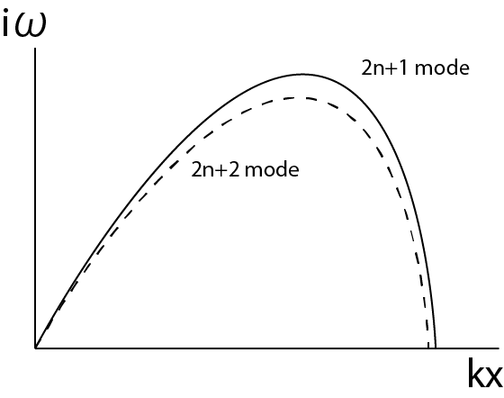
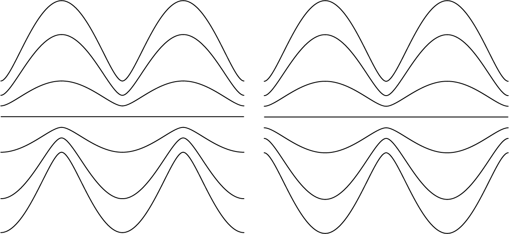
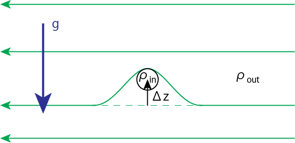
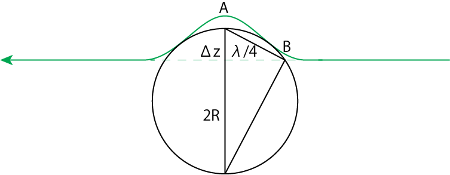
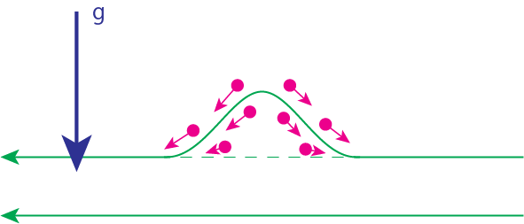
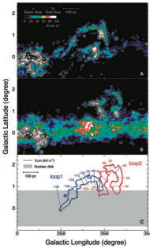

パーカー不安定性
パーカー不安定性とは
降着円盤で重要な役割を果たす磁気不安定性にパーカー不安定性があります。重力によって層状になった大気中の磁束に働く浮力によって駆動される不安定性で、磁気浮力不安定性の一種です。
パーカー不安定性は、銀河円盤における星間ガス運の形成機構としてパーカーによって提唱されたものです(Parker 1966)。それ以外にも天体表面に磁束ループを持ち上げる働きがあることから、太陽表面における磁気的活動性の起源となる磁束浮上にも関連しています。
厳密な導出
式変形
ここではHoriuchi+ 1988のLinear Stability Analysisにしたがってパーカー不安定性の導出を行いましょう。
初期には、静止した流体とx方向の磁場があり、平行平板大気を作っているとします。以下では等温とプラズマベータβ=P/Pmag一定を仮定します。重力は鉛直方向に働いていると考えてFg=g(z)ezとします。
連続の式より
∂ρ∂t+∇⋅(ρv)=0
運動量保存の式より
∂∂t(ρv)+∇⋅(ρvv)−14π(B⋅∇)B+∇Pgas+18π∇B2+ρFg=0
誘導方程式より
∂B∂t=∇×(v×B)
初期の物理量をρ0のように、添字の0をつけたもので表現します。すると、初期の物理量が満たす方程式は
∂ρ0∂t=0
v0=0
−14π(B0⋅∇)B0+∇P0+18π∇B20+ρ0g(z)ez=0
∂B∂t=0
初期の磁場の形はB0=Bx(z)exより
−14πBx(z)∂Bx∂x=0ex+∇P0+18π∇B2x+ρ0g(z)ez=0
この式と定温仮定C2s=P0/ρ0=uniform,v2A=B2x/(4πρ0)=uniformより
C2s∂ρ0∂z+12v2A∂ρ0∂z+ρ0g(z)=(C2s+12v2A)∂ρ0∂z+ρ0g(z)=0 ⟹ ∂ρ0∂z=−g(z)C2s+12v2Aρ0⟹ ln(ρ0(z)/ρ0(0))=−∫z0g(z)dzC2s+v2A/2 ⟹ ρ0(z)=ρ0(0)exp{−∫z0g(z)dzC2s+v2A/2}
同様にp0,Bxは
P0(z)=C2sρ0(z)=C2sρ0exp{−∫z0g(z)dzC2s+v2A/2}=P0(0)exp{−∫z0g(z)dzC2s+v2A/2}
B2x=βP08π=β8πP0(0)exp{−∫z0g(z)dzC2s+v2A/2} ⟹ Bx=(β8πP0(0))1/2exp{−∫z0g(z)dz2C2s+v2A}=Bx(0)exp{−∫z0g(z)dz2C2s+v2A}
ここで、重力ポテンシャルを
Φ=∫z0g(z)dz
そして重力の形を、原点に中心星が作る重力場と見立てて
g(z)=GMz(r0+z2)3/2=GMr20z/r0(1+(z/r0)2)3/2
とします。積分変数をZ=z/r0に置換すると
Φ=GMr20∫Z0Z(1+Z2)3/2r0dZ=GMr0∫z0~g(z)dz=GMr0~Φ
ここで~は規格化したものを表す記号です。するとρ0,P0,Bxはそれぞれ
ρ0(z)=ρ0(0)exp(−ϵ~Φ),P0(z)=P0(0)exp(−ϵ~Φ),Bx(z)=Bx(0)exp(−12ϵ~Φ)
途中、ϵ≡GM/r0C2s+v2A/2と定義しました。
ここに摂動が加わり、物理量がρ0→ρ0+δρ,v0=0→δv,P0→P0+δP,B0→B0+δBに変化したとします。
連続の式より
∂∂t(ρ+δρ)+∇⋅((ρ+δρ)+δv)=∂δρ∂t+∇⋅(ρ0δv)=0(1)
運動量保存則より
∂∂t((ρ+δρ)δv)+∇⋅((ρ+δρ)δvδv)−14π((B0+δB)⋅∇)(B0+δB)+∇(P0+δP)+18π∇(B0+δB)2−(ρ+δρ)gez=0⟹ −14π(δB⋅∇)B0−14π(B0⋅∇)δB+∇δP+14π∇(B0⋅δB)+δρgez=0(2)
誘導方程式より
∂∂t(B0+δB)=∇×(δv×(B0+δB)) ⟹ ∂∂tδB=∇×(δv×B0)(3)
摂動量をδP=δP(z)eiωt−ikxx−ikyyのように変数分離して、一つのフーリエモードに着目してみましょう。
音速の式より
C2s=P0+δPρ0+δρ=P0ρ0(1+δPP0)(1−δρρ0)=C2s(1−δρρ0+δPP0) ⟹ δρ=δPC2s
を用いて
(1)⟹ ∂∂tδρ+∂∂x(ρ0δvx)+∂∂y(ρ0δvy)+∂∂z(ρ0δvz)=0 ⟹ iωδPC2s−ikxρ0δvx−ikyρ0δ−∂∂z(ρ0δvz)=0⟹ iωδPC2s−ikxρ0δvx−ikyρ0δvy+∂∂z(ρ0δvz)=0(#1)
(2のx成分) ⟹ iωρ0δvx−14πδBz∂Bx∂z−ikxδP=iωρ0δvx+g2C2s+v2ABx4πδBz−ikxδP=0(#2)
(2のy成分) ⟹ iωρ0δvy+ikxBx4πδBy−ikyδP−ikyBx4πδBx=0(#3)
(2のz成分) ⟹ iωρ0δvz+ikxBx4πδBz+∂∂z(δP+Bx4πδBx)+δρg=0(#4)
(3のx成分) ⟹ iωδBx−ikyδvyBx+Bx∂δvz∂z+δvz∂Bx∂z=iωδBx−ikyδvyBx+Bx∂δvz∂z−g2C2s+v2ABxδvz=0(#5)
(3のy成分) ⟹ iωδBy+ikxBxδvy=0(#6)
(3のz成分) ⟹ iωδBz+ikxBxδvz=0(#7)
(#6) ⟹ δBy=−kxωBxδvy
(#7) ⟹ δBz=−kxωBxδvz
を代入して計算を行います。
(#2) ⟹ iωρ0δvx−gv2A2C2s+v2Akxωρ0δvz−ikxδP=0(##2)
(#3) ⟹ iωρ0δvy−ik2xωv2Aρ0δvy−ikyδP−ikyBx4πδBx=0(##3)
(#4) ⟹ iωρ0δvz−ik2xωv2Aρ0δvz+∂∂z(δP+Bx4πδBx)+gC2sδP=0(##4)
さらに
(##3) ⟹ δvy=kyδP+Bx4πδBxρ0(ω−k2xωv2A)
を代入して計算を行います。
(#1) ⟹ iωC2sδP−ikxρ0δvx−ik2yδP+Bx4πδBxω−k2xωv2A+∂∂z(ρ0δvz)=0(##1)
(#5) ⟹ iωδBx−ik2yρ0δP+Bx4πδBxω−k2xωv2ABx+Bx∂δvz∂z−g2C2s+v2ABxδvz=0(##5)
そして
(##2) ⟹ δvx=ikxδP+gv2A2C2s+v2Akxωρ0δvziωρ0
を全てに代入します。
(##1)⟹ i(ωC2s−k2xω)δP−k2xωgv2A2C2s+v2Aρ0ωδvz−iωk2yδP+Bx4πδBxω2−k2xv2A+∂∂z(ρ0δvz)=iωω2−k2xC2sω2C2sδP−k2xω2gv2A2C2s+v2Aρ0δvz−iωk2yω2−k2xv2A(δP+Bx4πδBx)+∂∂z(ρ0δvz)=0(*1)
(##5) ⟹ iωρ0δBx−ik2yωδP+Bx4πδBxω2−k2xv2ABx+Bx∂∂z(ρ0δvz)+Bxδvzg2C2s+v2Aρ0=0(*5)
(∗1)+(∗5)×ω2−k2xC2sω2C2sBx4πρ0 ⟹iωω2−k2xC2sω2C2s(δP+Bx4πδBx)+gv2A2C2s+v2A(ω2−k2xC2sω2C2s−k2xω2)ρ0δvz−iωk2yω2−k2xv2A(1+ω2−k2xC2sC2sω2v2A)(δP+Bx4πδBx)+(1+ω2−k2xC2sC2sω2v2A)∂∂z(ρ0δvz)=0
∂∂z(ρ0δvz)の係数の逆数をかけて式の整理を行います。途中、v2A=2C2sαを用いてアルヴェーン速度を消去し、さらにk2≡k2x+k2yとおくと
iω(δP+Bx4πδBx)の係数×(1+ω2−k2xC2sC2sω2v2A)−1=ω4−(2α+1)k2C2sω2++2αC4sk2xk2(ω2−2αC2sk2x)((2α+1)ω2−2αk2xC2s)C−2s≡−Dξη
(ρ0δvz)の係数×(1+ω2−k2xC2sC2sω2v2A)−1=ω2−2k2xC2s(1+α)((1+2α)ω2−2αC2sk2x)C2sαg≡−Dξξ
一方で
(∗1)×B2x4π−(∗5)×Bx4π ⟹ iωω2−k2xC2sC2sω2B2x4πδP−k2xω2gv2A2C2s+v2AB2x4πρ0δvz−iωρ0Bx4πδBx−B2x4πg2C2s+v2Aρ0δvz=0⟹/ρ0 iωω2−k2xC2sC2sω2v2AδP+iωδP−iω(δP+Bx4πδBx)−k2xω2gv2A2C2s+v2Av2Aρ0δvz−gv2A2C2s+v2Aρ0δvz=0⟹ iωgC2sδP=iωω2ω2v2A−k2xC2sv2A+C2sω2g(δP+Bx4πδBx)+ω2+k2xv2Aω2v2A−k2xC2sv2A+C2sω2g2v2A2C2s+v2Aρ0δvz
これと(##4)×iωより
−ω2ρ0δvz+k2xv2Aρ0δvz+iω∂∂z(δP+Bx4πδBx)+iωgC2sδP=0⟹ −(ω2−k2xv2A)ρ0δvz+iω∂∂z(δP+Bx4πδBx)+iωω2ω2v2A−k2xC2sv2A+C2sω2g(δP+Bx4πδBx)+ω2+k2xv2Aω2v2A−k2xC2sv2A+C2sω2g2v2A2C2s+v2Aρ0δvz=0
この式の係数のみに着目しましょう
iω(δP+Bx4πδBx)の係数=ω2(2α+1)ω2−2αC2sk2xgC2s≡−Dηη
(ρ0δvz)の係数=−(ω2−2αk2xC2s)(1−ω2+2αk2xC2sω2−2αk2xC2sg2α(1+α)C2s1(2α+1)ω2−2αk2xC2s)≡−Dηξ
よって最終的に方程式は、ξ≡ρ0δvz,η≡iω(δP+Bx4π)δBx
∂ξ∂z−Dξηη−Dξξξ=0
∂η∂z−Dηηη−Dηξξ=0
この式をまとめて
∂∂z(ξη)=(DξξDξηDηξDηη)(ξη)
のように書けます。これを数値積分してやれば良いことがわかります。
境界条件
z→∞で2つの物理量は減衰するような境界条件を設定します。すなわち
ξ=ξ0eκz
のような形を仮定してκの値を求めましょう。さらにzが大きいところではほとんど重力gはほぼ値が変わらないと考えて(WKB近似)
∂ξ∂z=κξ=Dξξξ+Dξηη
とします。すると
∂2ξ∂z2=κ2ξ=Dξξ∂ξ∂z+Dξη∂η∂z=Dξξκξ+Dξη(Dηξξ+Dηηη)=Dξξκξ+DξηDηξξ+Dηη(κξ−Dξξξ)⟹ κ2−(Dξξ+Dηη)κ+DξξDηη−DξηDηξ=0
∴ κ=Dξξ+Dηη±√(Dξξ+Dηη)2−4(DξξDηη−DξηDηξ)2
κ<0のとなるような解を選択するので、κ−=Dξξ+Dηη−√(Dξξ+Dηη)2−4(DξξDηη−DξηDηξ)2とします。
またz=0での境界条件として、ξ,ηのどちらかが反対称を仮定します。すなわち、z=0でどちらかの値が0であることを境界条件とします。
数値積分の方法
ルンゲ・クッタ法を用います。z=∞を出発点として、z=0まで積分を実行します。
論文の結果
ルンゲ・クッタによる積分計算などをすっ飛ばして、ここでは論文の結果の中でも重要な部分をかいつまんでご紹介いたします。
不安定性が成長するモードの波数依存性は？
- 波数が大きい(波長が小さい): 磁気張力が大きくなり成長しない
- 波数が小さい(波長が大きい): 流体要素が滑り降りる時間が長くなり浮力が大きくなりにくい
Figure: 横軸: 波数、縦軸: 成長率のグラフ
上図の2n+1モードはfundamental, 2nd-harmonics, 4th...に対応し、2n+2モードは1st-harmonics, 3rd...に対応します。2n+1と2n+2のモードの成長率がペアとなって現れます。
どういう形のモードが成長しやすい？
同じ波数でも、赤道面を挟んですべり対称のモードの方が鏡像対称よりも成長率が大きくなります。
Figure: 磁力線の概形、すべり対称(左図)と鏡像対称(右図)
直感的な導出
以下ではさらに直感的に導出するために、z方向の重力も一様とします。等温とプラズマベータ一定を仮定し、密度と磁場はρ=ρ(z),B=Bx(z)ezのように書かれるものとします。重力と磁気圧・ガス圧勾配力の釣り合いの式より
ddz(P+B28π)=−ρg ⟹ (1+β−1)C2sdρdz=−ρg
∴ dlnρdz=−gC2s(1+β−1) ⟹ ρ(z)=ρ0e−z/H′
ここでH′≡C2s(1+β−1)/gは磁場がある場合の等温平行平板のスケールハイトです。磁気圧力勾配に大気が支えられることによって、スケールハイトが大きくなっていることがわかります。ちなみにβ→∞では、磁場がない場合の静水圧平衡の式
ρ(z)=ρ0e−z/H (H≡C2s/g)
に一致します。
さて、この静水圧平衡状態にある系において雪道が加わり、図のように磁力線の一部がΔz≪1だけ持ち上がったとしましょう。このとき、磁力線と共に持ち上がった磁力線内部の流体の密度をρin(Δz)、磁力線の外側の流体の密度をρout(Δz)とします。z=0を持ち上げ前の高さにとします。
Figure: 摂動により曲がった磁力線の曲率半径
磁力線とともに持ち上がった内部と外部に密度差があれば、内部は浮力を受けます。これを計算していきましょう。ここで、流体の上昇が起きた時間ずけーるは、音波が雪道のスケールを伝播する時間スケールに比べて十分ゆっくりとします。すなわち、摂動は常に周囲と圧力平衡であると考えます。内部の流体は上昇後の磁力線に沿った方向にのみ運動できるので、内部の流体の磁気圧は上昇前後で変化しないと考えてよいでしょう。したがって内部と外部の密度差は
Δρ=ρin(Δz)−ρout(Δz)=rho0(e−Deltaz/H−e−Δz/H′)≃ρ0(1−ΔzH−1+ΔzH′)=ρ0Δz(H′−1−H−1)<0
で与えられます。この値は必ず負の値となるため、内部は周囲より軽くなることがわかります。内部の流体は、この密度差の分の浮力を受けるので
Fbuoyancy=−Δρg≃ρ0gΔz(H−1−H′−1)
となります。一方で上図のように磁力線が変形すると、下向きに磁気張力が働きます。磁気聴力の大きさは、磁力線の曲率半径をRとすると大雑把に見積もって
Ftension≃14πB20R
です。ここで0の添字は、磁力線がそのまま上昇したことにより上昇前の位置での磁場の強さが保たれている、ということからくるものです。
では次の図のようにして曲率半径RとΔzの関係式を導きましょう。半径Rの縁に内接する直角三角形を考え、相似関係を利用します。すると
Figure: 摂動により曲がった磁力線の曲率半径
λ4:Δz≃2R:λ4 ⟹ 2RΔz≃λ2/16 ⟹ R≃λ232Δz
ここでλは摂動のおおよその波長であり、辺ABをλ/4とした大雑把な見積もりです。
Fbuoyancy>Ftensionのとき内部の流体は上昇を続けることになり、これは不安定であることを意味します。
ρgΔz(H−1−H′−1)>32B204πλ2Δz ⟹ ρg2C2s(1+β)−1>64B208πλ2 ⟹C2s=P0/ρ0 g2C4sP0B20/(8π)(1+β)−1>64λ2 ⟹ λ2>64(1+β−1)C4s/g2H2
∴ λ>8H√1+β−1
よってスケールハイトの10倍程度の長さの摂動が加わったとき、浮力が張力を上回り、流体と磁力線は上昇を続けることになります。
このときの成長率も大雑把に見積もりましょう。(速度vAでスケールハイトHを上昇するのにかかる時間スケール)=(パーカー不安定性が成長するのにかかる時間スケール)と考えると
τA=vAH ⟹ νParker≃H/vA
となります。
直感的理解
以上は式変形からの導出でしたが、ポイントとなったのは摂動内部の流体が磁力線に沿った方向にのみ広がるという点です。これをもう少し別の視点から考察してみましょう。磁力線の一部が持ち上がることにより、磁力線と共に持ち上がった流体要素は磁力線に沿って(滑り台を下りるように)落ちていきます。すると持ち上がった頂上部分は周囲よりも密度が薄くなり、浮力を感じるようになります。この浮力が磁気張力よりも強ければさらに上昇が続く、という一連の流れがこの不安定性の本質です。
Figure: 持ち上がった磁力線に沿って流体要素が滑り落ちる
太陽表面のコロナループ
対流層で強められた磁場が浮上しコロナにまで達する大きなループを形成します。光球面での付け根に黒点を形成すると考えられています。
銀河中心方向に見つかった分子雲ループ
銀河中心方向の電波によるCO輝線観測により分子雲のループが見つかっています(Fukui+, 2006)。これは銀河円盤のパーカー不安定性によりできた構造であると指摘されています。
Figure: 銀河中心の方向に見つかった分子雲ループ
参考文献
Fukui+, 2006
Horiuchi+, 1988
Parker, 1966
活動する宇宙, 柴田, 福江, 松元, 嶺重